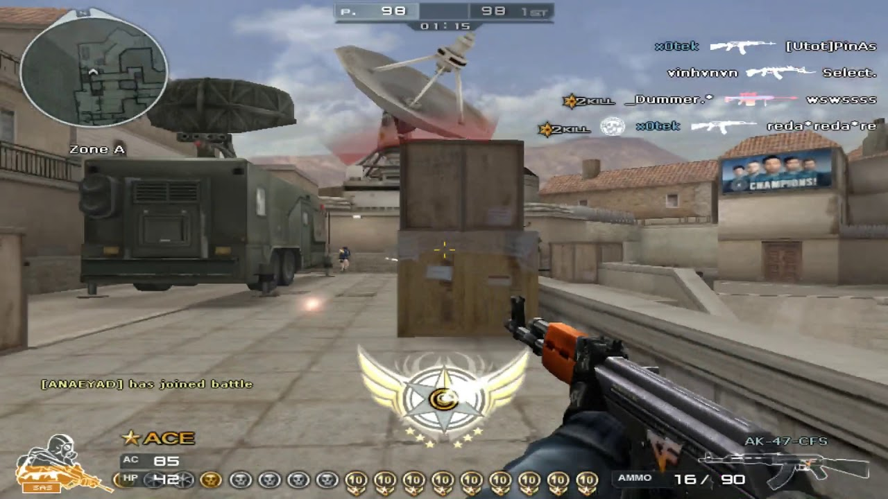

CrossFire is an online tactical first-person shooter video game developed by Smilegate Entertainment. It was first released in 2007 in South Korea, and has since been released in other countries around the world, including the Philippines.
In CrossFire, players are divided into two teams: the Global Risk, which represents the Western world, and the Black List, which represents the Eastern world. The objective of the game is to eliminate the opposing team or to complete specific mission objectives, such as planting or defusing a bomb or rescuing hostages.
-
CrossFire has a variety of game modes, including team deathmatch, search and destroy, and capture the flag. It also has a wide range of weapons and equipment available for players to use, including rifles, shotguns, pistols, and explosives.
-
CrossFire has a large player base and is popular in many countries around the world, including the Philippines. It is available on multiple platforms, including PC, Mac, and mobile devices.
To play CrossFire, it is helpful to have some familiarity with the following concepts:
- First-person shooter (FPS) gameplay: CrossFire is a tactical FPS, which means that players view the game world from the perspective of their character and use a variety of weapons and equipment to eliminate their opponents. If you have experience playing other FPS games, you may find it easier to learn CrossFire.
- Keyboard and mouse controls: CrossFire is played using a keyboard and mouse, and it is important to be familiar with the controls in order to play the game effectively. This includes movement, aiming, and using weapons and equipment.
- Team-based gameplay: CrossFire is a team-based game, and players are expected to work together in order to achieve their objectives. It is important to communicate with your teammates and coordinate your actions in order to be successful.
- Basic strategy: CrossFire is a tactical game, and it is important to have a good understanding of basic strategy in order to be successful. This includes understanding the strengths and weaknesses of different weapons and equipment, and knowing how to use them effectively.
- Game modes: CrossFire has a variety of game modes, including team deathmatch, search and destroy, and capture the flag. Familiarizing yourself with the objectives and gameplay of each mode will help you to be more effective in the game.
In CrossFire, VIP (Virtual Identity Pass) status allows players to access a range of exclusive weapons and equipment. These VIP items are typically more powerful or have unique abilities compared to the regular weapons and equipment available in the game.
Special weapons: VIP players may have access to unique weapons that are not available to regular players. These weapons may have higher damage or other special abilities.
CrossFire has a variety of game modes, including team deathmatch, search and destroy, and capture the flag. In team deathmatch, the objective is to eliminate as many members of the opposing team as possible within a certain time limit. In search and destroy, one team must plant a bomb and the other team must defuse it, or vice versa. In capture the flag, teams must capture the opposing team's flag and bring it back to their own base.
